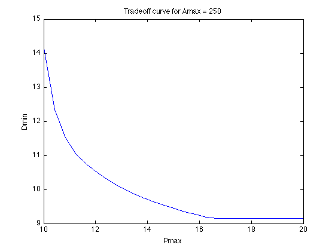

Digital circuit sizing example (GP)
m = 7;
Vdd = 5;
Amax = 250;
INV = struct('Cin',3, 'Cint',3, 'Rdrv',0.48, 'A',3, 'Ileak',0.006);
NAND3 = struct('Cin',4, 'Cint',6, 'Rdrv',0.48, 'A',8, 'Ileak',0.007);
NOR2 = struct('Cin',5, 'Cint',6, 'Rdrv',0.48, 'A',10, 'Ileak',0.009);
clear gates;
gates([1 3 6]) = INV;
gates([2 7]) = NAND3;
gates([4 5]) = NOR2;
primary_inputs = [8 9 10];
primary_outputs = [11 12];
M = m + length( primary_inputs ) + length( primary_outputs );
FI = cell(M,1);
FI{1} = [8];
FI{2} = [8 9 10];
FI{3} = [10];
FI{4} = [1 2];
FI{5} = [2 3];
FI{6} = [4];
FI{7} = [3 4 5];
FI{8} = [];
FI{9} = [];
FI{10} = [];
FI{11} = [6];
FI{12} = [7];
Cin_po = sparse(M,1);
Cin_po(primary_outputs) = [10 10];
Cload_pi = sparse(M,1);
Cload_pi(primary_inputs) = [10 10 10];
f_gates = 0.001*ones(m,1);
f_pi = sparse(M,1);
f_pi(primary_inputs) = 0.001*[10 10 10];
FO = cell(M,1);
for gate = [1:m primary_outputs]
preds = FI{gate};
for k = 1:length(preds)
FO{preds(k)}(end+1) = gate;
end
end
Cin_norm = [gates.Cin]';
Cint_norm = [gates.Cint]';
Rdrv_norm = [gates.Rdrv]';
A_norm = [gates.A]';
Ileak_norm = [gates.Ileak]';
output_gates = [FI{primary_outputs}];
N = 25;
Pmax = linspace(10,20,N);
min_delay = zeros(N,1);
disp('Generating the optimal tradeoff curve...')
for n = 1:N
cvx_begin gp quiet
variable x(m)
variable T(m)
Cin = Cin_norm.*x;
Cint = Cint_norm.*x;
R = Rdrv_norm./x;
Cload = cvx( zeros(m,1) );
for gate = 1:m
if ~ismember( FO{gate}, primary_outputs )
Cload(gate) = sum( Cin(FO{gate}) );
else
Cload(gate) = Cin_po( FO{gate} );
end
end
D = 0.69*ones(m,1).*R.*( Cint + Cload );
area = A_norm'*x;
Pdyn = Vdd^2*sum( f_pi(primary_inputs).*Cload_pi(primary_inputs) ) + ...
Vdd^2*(f_gates'*(Cint + Cload));
Pstat = Vdd*Ileak_norm'*x;
power = Pdyn + Pstat;
minimize( max( T(output_gates) ) )
subject to
x >= 1;
area <= Amax;
power <= Pmax(n);
for gate = 1:m
if ~ismember( FI{gate}, primary_inputs )
for j = FI{gate}
D(gate) + T(j) <= T(gate);
end
else
D(gate) <= T(gate);
end
end
cvx_end
if ~strfind(cvx_status,'Solved')
error('Problem could not be solved.')
end
fprintf(1,' Pmax = %6.2f delay = %3.2f\n',Pmax(n),cvx_optval);
min_delay(n) = cvx_optval;
end
figure, clf
plot(Pmax,min_delay);
xlabel('Pmax'); ylabel('Dmin');
title(['Tradeoff curve for Amax = ' num2str(Amax)])
disp('Optimal tradeoff curve plotted.')
Generating the optimal tradeoff curve...
Pmax = 10.00 delay = 14.20
Pmax = 10.42 delay = 12.33
Pmax = 10.83 delay = 11.51
Pmax = 11.25 delay = 11.02
Pmax = 11.67 delay = 10.72
Pmax = 12.08 delay = 10.48
Pmax = 12.50 delay = 10.27
Pmax = 12.92 delay = 10.08
Pmax = 13.33 delay = 9.92
Pmax = 13.75 delay = 9.78
Pmax = 14.17 delay = 9.66
Pmax = 14.58 delay = 9.54
Pmax = 15.00 delay = 9.44
Pmax = 15.42 delay = 9.35
Pmax = 15.83 delay = 9.26
Pmax = 16.25 delay = 9.18
Pmax = 16.67 delay = 9.15
Pmax = 17.08 delay = 9.15
Pmax = 17.50 delay = 9.15
Pmax = 17.92 delay = 9.15
Pmax = 18.33 delay = 9.15
Pmax = 18.75 delay = 9.15
Pmax = 19.17 delay = 9.15
Pmax = 19.58 delay = 9.15
Pmax = 20.00 delay = 9.15
Optimal tradeoff curve plotted.
